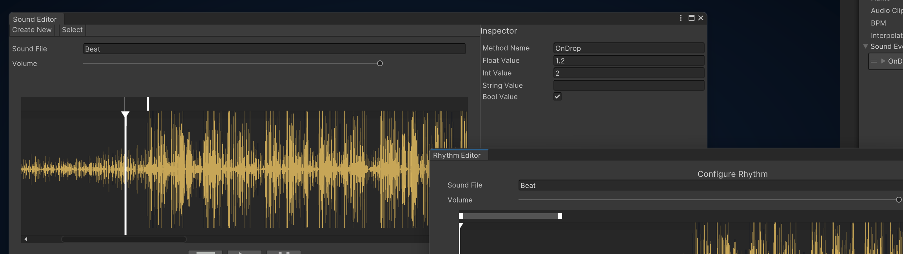

In-Engine Audio Editor
Since the Unity Editor does not include a proper tool with audio controls, I decided to develop an editor that provides those. In addition to audio controls, the tool also allows to create generic audio events that trigger at any given point in time, as well as different methods to configure the rhythm of an audio file. The tool was developed as an extension to the game (G)raveyard - a rhythm combat game.
Upon creating or selecting a sound element, the editor creates a waveform and populates the window with existing events. Events are only invoked during the runtime of the game.


To improve the "feel" of the rhythm the tool suggests the use of an animation curve to modify and return a value between two beats - it can be used to widen the input window.
 Configuring the rhythm
Configuring the rhythm
The waveforms seen in the figures above have been generated for third party soundtracks.
To the project:
GitHub Link